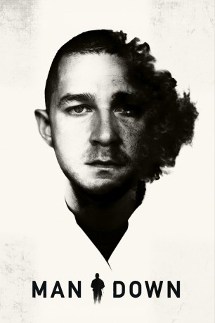

#6911 Man Down
 
 IMDB-Wertung: 5.8 / 10
IMDB-Wertung: 5.8 / 10  Metascore: 0
Metascore: 0 
When a U.S. Marine returns home from Afghanistan, he finds that the place he once called home is no better than the battlefields he fought on overseas. Accompanied by his best friend, he searches desperately for the whereabouts of his estranged son and wife. In their search, the two intercept a man carrying vital information about his family.
Jahr: 2015
Dauer: 90 Minuten
FSK: 16
Land: USA Studio: Lionsgate PremiereTonspuren: DTS - ,
Untertitel:
Auflösung: 1080p (1920x800) Größe: 3993 MB
Genre: Thriller, Drama
Regisseur: Dito Montiel
Drehbuch: Adam G. Simon
Soundtrack:
Darsteller:
 Shia LaBeouf als Gabriel Drummer
Shia LaBeouf als Gabriel Drummer Jai Courtney als Devin Roberts
Jai Courtney als Devin Roberts Gary Oldman als Counselor Peyton
Gary Oldman als Counselor Peyton Kate Mara als Natalie Drummer
Kate Mara als Natalie Drummer Tory Kittles als Sergeant Miller
Tory Kittles als Sergeant Miller Clifton Collins Jr. als Charles
Clifton Collins Jr. als Charles Charlie Shotwell als Johnathan Drummer
Charlie Shotwell als Johnathan Drummer Jose Pablo Cantillo als 2nd LT. Taylor
Jose Pablo Cantillo als 2nd LT. Taylor Justin Smith als Stanton
Justin Smith als Stanton- Pierre Kennel als Officer Walnum
 Ned Yousef als Officer Osiris
Ned Yousef als Officer Osiris Jaylen Moore als Swat Captain Perez
Jaylen Moore als Swat Captain Perez Jim Klock als Police Officer
Jim Klock als Police Officer- Wolé Parks als Chance
- Zehra Fazal als Pashto Woman #1
- Naz Deravian als Pashto Woman #2
- Reem Kadem als Nurse / Afghani Mother
 Mustafa Haidari als Afghani Father
Mustafa Haidari als Afghani Father Greg Vrotsos als Marine Mechanic
Greg Vrotsos als Marine Mechanic- Nick Jones Jr. als Sergeant Moore
- Adrian Lockett als Platoon Soldier
 Christopher Berry als Medic
Christopher Berry als Medic Michael D. Anglin als Military , uncredited
Michael D. Anglin als Military , uncredited John L. Armijo als SWAT Officer , uncredited
John L. Armijo als SWAT Officer , uncredited- Cameron Avants als Bully Kid , uncredited
- Noah Cook als Marine Trainee / Instructor , uncredited
- Estefania Crespo als Birthday Party Guest , uncredited
 Greg Duncan als Military Recon , uncredited
Greg Duncan als Military Recon , uncredited Christopher Heskey als SWAT Officer , uncredited
Christopher Heskey als SWAT Officer , uncredited- Grayson Thorne Kilpatrick als Bully #1 , uncredited
 Inder Kumar als Military Men at Picnic , uncredited
Inder Kumar als Military Men at Picnic , uncredited- Dale Liner als Police Officer , uncredited
 Ron M Patterson als Marine , uncredited
Ron M Patterson als Marine , uncredited- Hassan Said als Afghan Villager , uncredited
- Paul Sado als Spori
- Bill O'Reilly als Bill O'Reilly
- Kenzo Cervoni als Afghan Boy
- Kenny Williams als Boy at Picnic
- Elizabeth Argibay als Afghanistan Female , uncredited
 Charles Barber als Policeman , uncredited
Charles Barber als Policeman , uncredited- Lukas Bennett als Luke , uncredited
- Andrew James Bleidner als Marine Shia Platoon , uncredited
- Scott Chauvin als Marine , uncredited
- Scott Gulino als Marine , uncredited
- Tyler James als (uncredited
- Patrick Kearns als Humvee Driver , uncredited
- Sherry Kilpatrick als Bully #1 mom , uncredited
- Gerard 'Jerry' Lewis als SOI Instructor , uncredited
- Jason Palombo als Marine Enlistee , uncredited
- Robert Pekel als SOI Instructor , uncredited
Datei: X:\2015(G-M)\Man Down (2015, FSK16, 1920x800).mkv seit 06.09.2017
Festplatte: HD 2015(A-Z)
 Es gibt insgesamt 129 Filme in der Gruppe '2015(G-M)'
Es gibt insgesamt 129 Filme in der Gruppe '2015(G-M)'